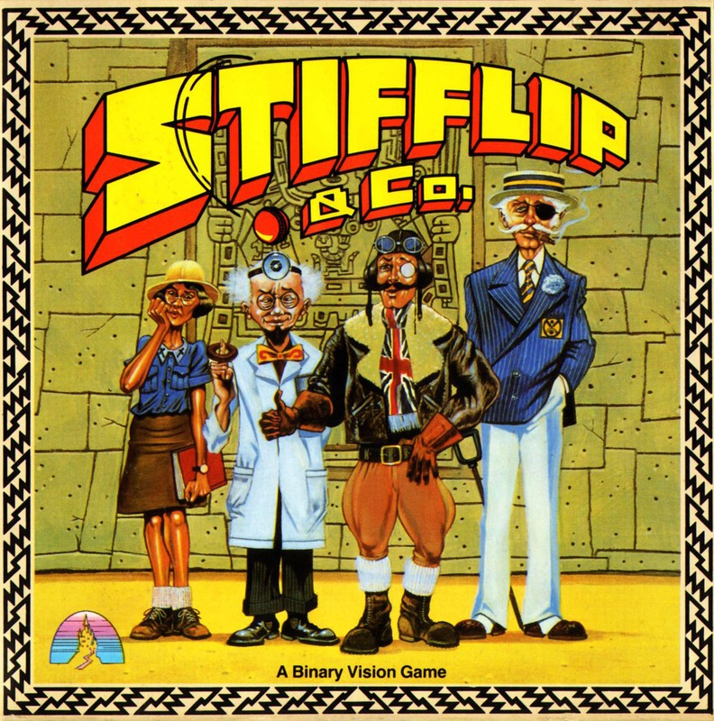
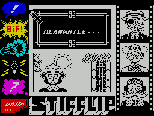

Stifflip & Co


{kind=link}

| Publisher: | Palace |
| Price: | £9.95 |
| Year: | 1987 |
| Source: | CRASH, Issue 44 |

Land of Hope and Glory, cold rice pudding, wet Sundays in Manchester and long queues at the Post Office have all helped make Britain the country it is today. But above all these stands one item that has truly put the Great in Great Britain — the cricket ball. This tremendously hard orb, which can smite a human body with such force that it hurts even through a foot of mattressing, has beaten the British character into shape.
But now evil is in the air — the dastardly Count Chameleon has plans to change a cricket ball’s bounce with the help of his rubber-tronic ray. This bounder must be boweled a bouncer if he is to be stopped, and Viscount Sebastian Stifflip, Professor Braindeath, Colonel R G Bargie and Miss Palmyra Primbottom are the team to do it.
The characters are controlled in turn and followed as they make their way through the perilous pitfalls that await them on the far distant South American continent.

The one you’re controlling is shown in the bottom half of the comic-strip-style screen, with the previous scene in the top half; the other three characters are on the right side of the screen.
Icon and menu systems allow our heroes to move, converse with other characters, and manipulate objects including lengths of rope and thread, knives and reeds. These objects will help you find solutions to the puzzles that obstruct the way to the Count and his obnoxious device.
But it’s just not cricket — the bureaucrats, cretins, wide boys and rotten cads our fearless four encounter in South America can try the patience of this English party. So sometimes you’ll have to land a good old thump on a foreign body with some accurate hooking, uppercutting — or ungentlemanly, but decidedly effective, punching below the belt.
Be warned, however: if too many low blows are thrown divine intervention occurs, and the offending character is dispatched heavenward.
There are two parts to Stifflip & Co, loaded separately; you must complete the first to reach the second. And remember, Britain expects every man and woman to do their best.
CRITICISM
“Wow! You’ll be addicted in an instant. The graphics are marvellous and colour is used perfectly; the sound is brilliant too, with a fantastic title tune. Stifflip & Co is packed full of jokes and humorous faces — I particularly liked the way the screens change and the sequence for hitting people. I can’t find anything to moan about in this first-class game — perhaps I’m ill, or just addicted!”
NICK ... 91%
“Brilliant! Stifflip & Co strikes just the right balance between arcade game and adventure. The graphics are great, the title tune and in-game FX are superb; I don’t think there’s anything wrong with Stifflip & Co. It’s polished, attractive, and amusing, and requires a lot of thought. Anyone with half a brain will get hours of fun. The only problem: I can see loads of spin-offs in the future...”
MIKE ... 92%
“I haven’t enjoyed an icon-driven adventure so much since The Fourth Protocol was released — and Stifflip & Co’s programmers worked on it, too. Though Stifflip & Co is extremely hard to crack, the presentation is clear and simple enough to make it permanently addictive. Each problem is fiendishly constructed and very satisfying once overcome. And the superb graphics express a kind of humour which is usually restricted to text adventures, but the clever features aren’t there to cover for a poor game — they add to the strong atmosphere. It’s all good clean fun, and well worth persevering with.”
PAUL ... 88%
COMMENTS
| Joystick: | Cursor, Kempston, Sinclair |
| Graphics: | Large and very good; monochromatic cartoon area, coloured icons |
| Sound: | Outstanding tongue-in-cheek title tune with equally effective in-game tunes and effects |
| Options: | Definable control keys |
| General rating: | An excellent joke on the cliches of the British Empire with loads of addictive playability |
| Presentation: | 91% |
| Graphics: | 88% |
| Playability: | 89% |
| Addictive qualities: | 90% |
| Overall: | 90% |